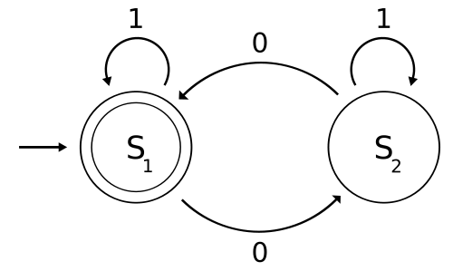
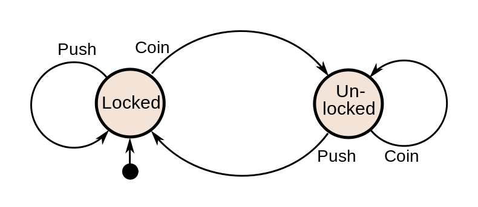
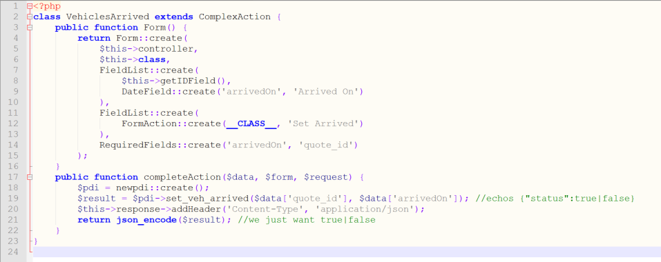

Painting outside the lines with SilverStripe
Creating more than the web
Tena Koutou
Who is this guy?
A web developer. First met Silverstripe in 2008 (v2.2), haven't really looked back much since.
 Nightjar
NightjarWhy SilverStripe?
- It's easy.
- Which means it makes me look good.
- Which means it's better than *XYZ.
Trust me.
It's not like I work for
the company or anything...
ps. I mean like, I do… but… know me before you judge me.
This talk
- Background
- What's the problem?
- Defining the solution
- Technical twister
- The advantages of SilverStripe
- ???
- Profit.
Background
Large motor dealer in Newcastle, England


Jeep, Chrysler, Alfa-Romeo, Fiat
Processing Fleet sales
SPREADSHEETS.
SO MANY SPREADSHEETS.
HUUUUUUUGE SPREADSHEETS.
So they built a system
The usual story for a big corporate
But it works
What's the problem?
SPREADSHEETS
Even worse than before
TECHNICAL DEBT
Only about… 3 years worth or so…
System actors
Developers build the best systems.
Users use it wrong, right?
So let's fix it
- Collect user stories
- Fix clear bugs
- Build new features
Maintain it
- Fix my mistakes
- Fix their mistakes
- Tutor the users
The grind
Focus on usability…
…But it breaks faster than we fix it!
Defining the solution
The impossible solution
All we really need is a system that is
- A consistent nice UX throughout
- Infinitely scalable
- Infinitely reportable
- Infinitely adaptable
- Infinitely auditable
- Kept to a minimum of technical debt at all times
And keeps correct to the specification
of that week
Simple, right?
AND EXPORTS SPREADSHEETS.
Well …
while ( $grinding ) {
$xp ++;
}
But …
One mistake
One action
One action
One feature
Start at the top
Feels backwards.
Refactoring
Strip and rebuild,
consistently.
Meanwhile …
User mistakes
Inconsistent states
Manual actions to transition back
:o
It's a FSM!Finite
State
Machine!
 Does look sorta similar though.

A finite state machine example for a turnstyle
And so!
Pages are states.
Form actions are transitions.
Technical twister
Back to SilverStripe?
- Autoloader
- Routing
- Templates
- Config
- Forms
- GridField my
lifeUI
With enough GridFields we could solve all the world's problemsSam Minnée, 2014
Consistency! \o/
Trasitions
Yeah so forms inside of forms is not supposed to be a thingJakr
How?
- /controller/
- /controller/Form
- /controller/Form/double-data-how-whateven
function StateListForm() {
//...
return Form::create($this, __FUNCTION__, $fields, $actions, $validation);
}
function TransitionInputForm() {
//...
return Form::create($this, __FUNCTION__, $fields, $actions, $validation);
}public function doTransition($data, $form, $request)$form->getName()public function doTransition($data, $form, $request) {
if($form->getName() === 'StateListForm') {
return $this->TransitionInputForm();
} else {
//do the thing
I've only shifted the technical debt!
FormAction is a form field.
&&
Form Fields can handle actions
What if a FormAction could be a form action!?
The Holy Grail!?
Form::httpSubmission
// Try to find a field that has the action, and allows it But it's commented. Since like, it was introduced -.-
You will need:
- A form action
- A URL Handler
- An allowed action
- A controller method
Form::httpSubmission
$this->controller->hasMethod($funcName)
&& !$this->controller->checkAccessAction($funcName)Object::hasMethod
method_exists($this, $method) || isset(self::$extra_methods[$this->class][strtolower($method)])What modifies extra_methods?
Object::addWrapperMethod

foreach($transitions as $class => $title) {
//set actions and required permissions
$extra_actions[$class] = Config::inst()->get($class, 'permission') ?: true;
//MAGIC HAPPENS, I BELIEVE!
$this->addWrapperMethod($class, 'complexSubmission');
//Point the URLs to the magic!
$extra_handlers[$class] = 'complexSubmission';
}
//Set it all
$this->config()->allowed_actions = array('complexSubmission')+$extra_actions;
$this->config()->url_handlers = $extra_handlers;
class StateController extends Controller {
public function init() {
//as previous slide
}
public function StateForm() {
//What it says on the tin
}
public function complexSubmission() {
//point ALL FormActions here
}
}Encapsulation!
class Transition extends Object {
public function canPerform() {
//Are we able to do this?
}
public function TransitionForm() {
//Collect the input
}
public function perform() {
//Complete the transition
}
}Black magic
The way to tell forms apart is gone!
About magic
Object::__call() prepends the called name
before calling the wrapped target
array_unshift($arguments, $config['method']);So we can tell things apart…
…In the most legit of switch statements
$args = func_get_args();
switch (count($args)) {
case 4: //Called by an alias
$type = array_shift($args);
case 3: //Form action target
list($data, $form) = $args;
case 1: //Form submission (like any other action!)
$request = array_pop($args);
break;
default:
$args = count($args);
throw new InvalidArgumentException("doComplexAction: Invalid number of args passed ($args)");
}Sanity check
if(!$request instanceof SS_HTTPRequest)
throw new InvalidArgumentException("complexSubmission: not passed a request");
if(!$type) //State Form calls complexSubmission directly as action
$type = ($form && $form instanceof Form) ? $form->getName()
: $type = $request->param('Action');
//Ensure this is a thing!
if(!$type || !is_subclass_of($type, 'Transition'))
throw new Exception('Could not determine Transition type');Get us some action
$transitions = $this->config()->transitions;
$title = array_key_exists($type, $transitions) ? $transitions[$type] : null;
if(!$title) //Transition not applicable from this state
return $this->httpError(404, "Transition '$type' isn't available from state {$this->class}.");
$transition = $type::create($this, $title);Deal with it
if($form && $type == $form->getName()) {
//Complete the transition's action
$transition->perform($data, $form, $request);
}
else {
$errors = $transition->canPerform();
if($errors) //Items do not meet the state criteria
$output = $request->isAjax() ? json_encode($errors) : ArrayList::create($errors)->renderWith('ComplexAction_failure.ss');
if(!$output) //Send out the input form! (validation or initial entry)
$output = $form ? $transition->Form()->forTemplate() : $transition->Form();
}
return $output;&
The advantages of SilverStripe
- Build fast, fail fast. Fix faster.
- Legitimate use for a switch statement, owww yis!
- 'Monolithic' structure helping rather than hindering
What's next?
Flexibility of SilverStripe allows for easy modularisation!
***
Config/Injector defined compositions!
***
Can apply it to anything with a defined flow, even if it's not linear.
Framework
I encourage you
Give it a go!
Is it over-abstraction?
Not on your life, matey.
Over-engineering is the SilverStripe way